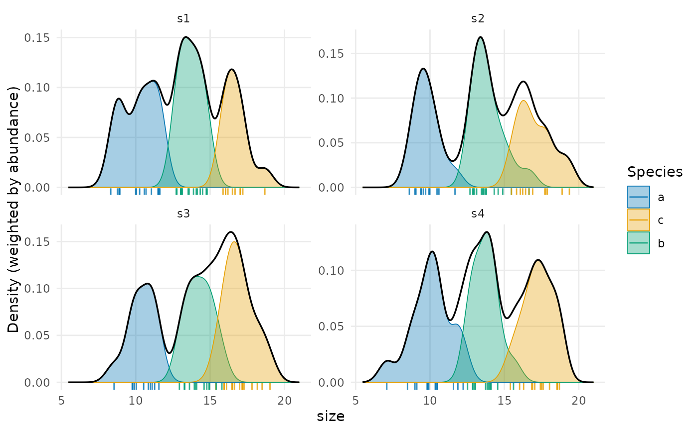
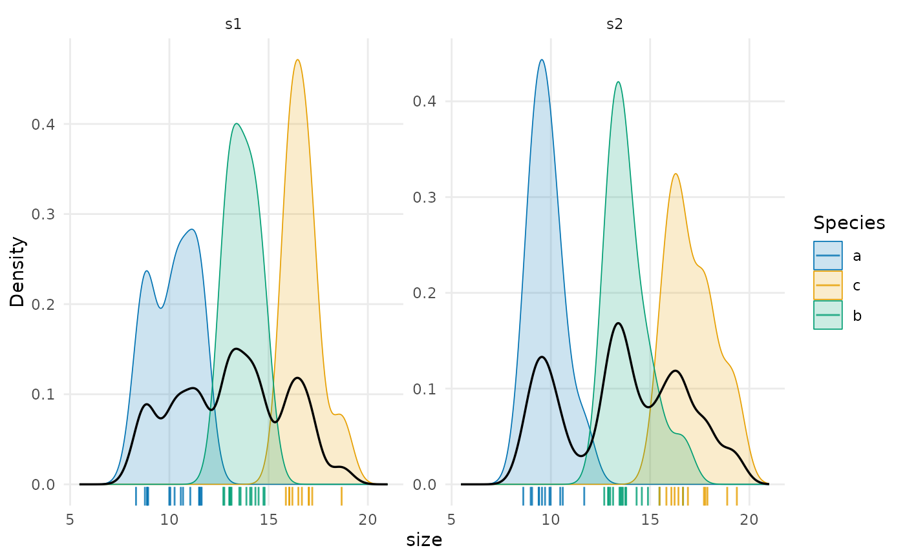

Plot the trait distributions of populations within communities
Source:R/trait_plots.R
plot_population_traits.RdDraws, in one panel per site, the trait probability density of each population from
trait_densities(), filled with the colour of its species and with adjustable transparency,
the density of the community as a black line and the individuals as a rug. With
weighted = TRUE (the default) each population is scaled by its relative abundance, so that
the populations of a site add up to the community line; with weighted = FALSE every
population integrates to one, which shows the shape of rare populations.
Usage
plot_population_traits(
individuals,
trait = "trait",
site = "site",
species = "species",
abundance = NULL,
sites = NULL,
weighted = TRUE,
community = TRUE,
rug = TRUE,
alpha = 0.35,
colours = NULL,
highlight = NULL,
bw = NULL,
n = 512,
ncol = NULL,
scales = "free_y"
)Arguments
- individuals
Data frame with one row per individual.
- trait
Name of the column with the trait.
- site, species
Names of the columns with the site and the species.
- abundance
Name of a column with the abundance of each population (the same value for all its individuals), or
NULLto weight populations by the number of individuals measured.- sites
Sites to draw;
NULL(the default) draws all.- weighted
Scale the population densities by their relative abundances.
- community
Draw the density of the community.
- rug
Draw the individuals as a rug.
- alpha
Transparency of the population densities (0, transparent, to 1, opaque).
- colours
Colours of the species: unnamed, in the order of first appearance in
individuals, or named by species.NULL(the default) uses the Okabe-Ito palette for up to seven species andgrDevices::hcl.colors()("Dark 3") for more. Withhighlight, the colours of the highlighted species only.- highlight
Species to draw in colour, on top of the others, which are drawn in grey and left out of the legend. Useful when a site holds many species, whose colours cannot all be told apart.
- bw
Bandwidth of the kernel, or
NULLfor the rule above.- n
Number of points of the grid of trait values.
- ncol, scales
Passed to
ggplot2::facet_wrap().
Details
With many species, highlight draws a few of them in colour and the rest in grey. For traits
whose spread grows with their mean, such as body size, see the note on the bandwidth in
trait_densities().
The ggplot object can be changed further, for instance with + ggplot2::facet_wrap(~ site, ncol = 2), + ggplot2::scale_fill_viridis_d() or + ggplot2::theme_classic().
See also
Other trait variation among individuals:
community_index(),
neighbour_metrics,
nested_variance(),
null_intervals(),
plot.mc_trait_gradient(),
plot.nested_variance(),
plot.trait_flex(),
plot.trait_rarefaction(),
plot.tstats(),
population_shifts(),
sample_individuals(),
subsample_individuals(),
trait_densities(),
trait_flex(),
trait_gradient(),
trait_gradient_bayes(),
trait_gradient_phylo(),
trait_gradient_test(),
trait_gradient_weights(),
trait_rarefaction(),
tstats(),
tstats_summary()
Examples
set.seed(1)
ind <- data.frame(site = rep(paste0("s", 1:4), each = 40),
species = sample(c("a", "b", "c"), 160, replace = TRUE))
ind$size <- c(a = 10, b = 14, c = 17)[ind$species] + rnorm(160)
plot_population_traits(ind, "size")

plot_population_traits(ind, "size", weighted = FALSE, alpha = 0.2, sites = c("s1", "s2"))
